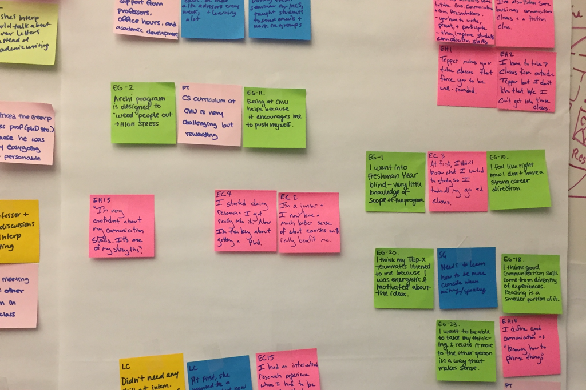
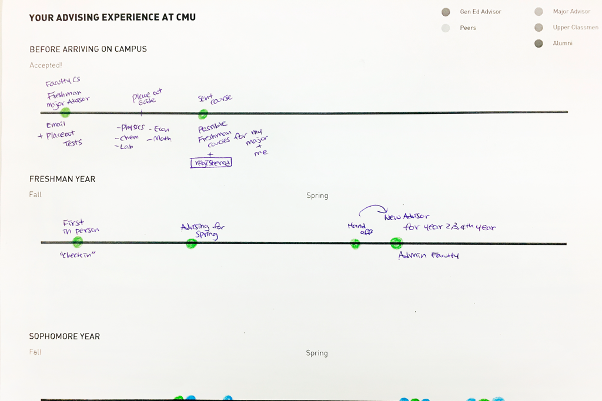
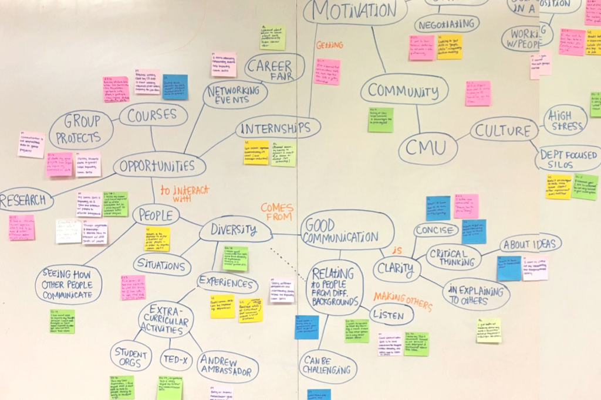
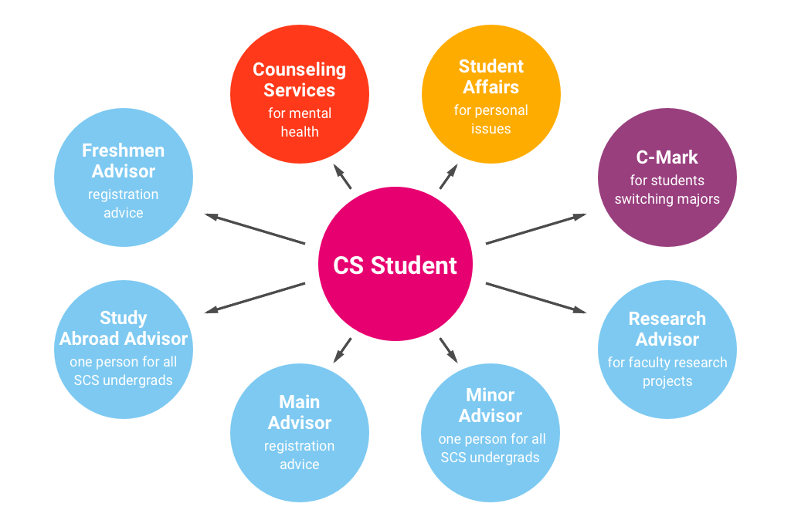
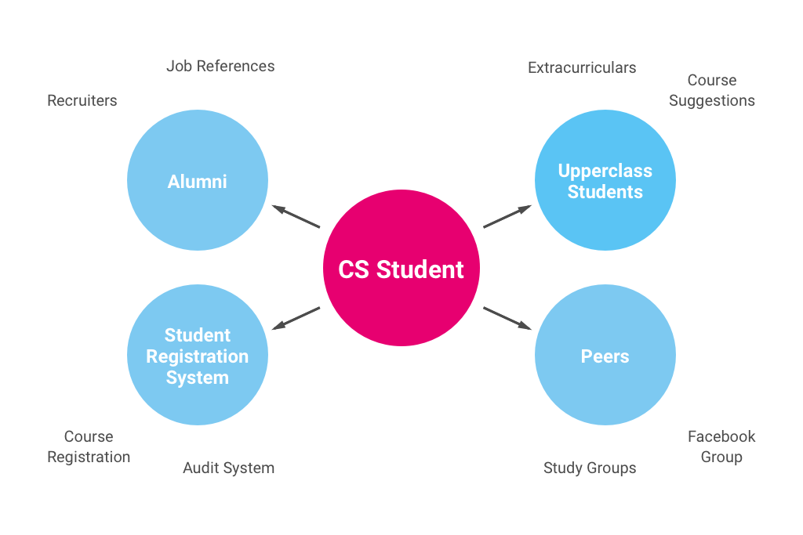

Research
As a team we sought to understand the current problem space from multiple stakeholders’ perspectives and discover the strategies and trends at other universities.
11universities analyzed
16stakeholders interviewed
Competitive Analysis
We started with internet research and an ecosystem dump of our undergraduate experiences to examine how other universities promote communication skills and identify gaps and opportunities.
- Carnegie Mellon University
- Harvard University
- Harvey Mudd College
- Massachusetts Institute of Technology
- Olin College
- Princeton University
- Purdue University
- Stanford University
- University of Southern California
- Washington University in St. Louis
- Wellesley College
We found that while almost all universities, including CMU, utilized curriculum requirements and communication centers, many also had an "x-factor" initiative that promoted student communication skills in unique ways. For example—student conferences to share personal projects and work, a 1-month no-class period for exploring interests, and cultural and humanities initiatives.
We found that CMU was generally lacking in this "x-factor."
Stakeholder Interviews
We sought to gather insights and opinions on communication at CMU. How do students and faculty at CMU feel about communication skills? How are students currently gaining communication skills?
10undergraduate students
2teaching faculty
2faculty advisors
1writing center director
1writing center consultant
Synthesis & Analysis

Initial Interview Findings
Faculty understand communication is important but prioritize other skills and requirements first. Generally, students have little enthusiasm for the courses actually focused on writing and communication.
Students therefore gain communication skills primarily via extracurricular activities and student-to-student interaction, not schoolwork.

Directed Storytelling Findings
Being primarily focused on graduation requirements, advising at CMU does little to help students with understanding what soft skills are important and how to develop these skills to achieve personal goals.

Concept Map
Many students at CMU are discovering opportunities to develop leadership and communication skills, but it's not happening in a systematic or consistent way.
What if advising at CMU focused on students’ goals and the big picture instead of simply graduating, the lowest standard?

Formal Advising Service Model
Students are overwhelmed by the multitude of advisors they need to coordinate with over short time periods—15 minutes per session.
Overall, the formal advising process for CMU undergraduates is short, fragmented, and highly dependent on student initative.

Informal Advising Service Model
Because of the lack of formal guidance, students rely mainly on their informal advising network of peers to navigate their decisions and experiences in college.
By encouraging students to consider their values and long-term goals, students will be able to better identify the skills they need to succeed and likely feel more motivated to develop their soft skills.
View Research Report Here